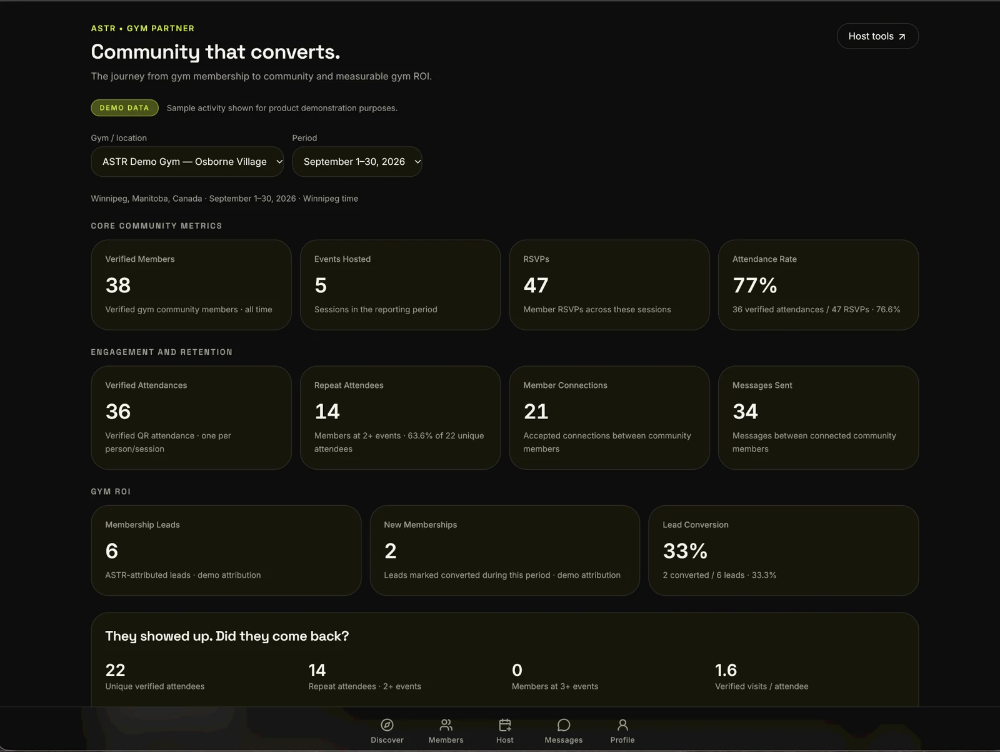
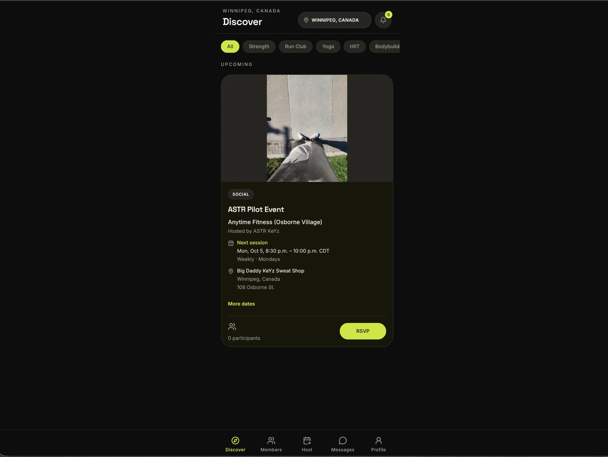
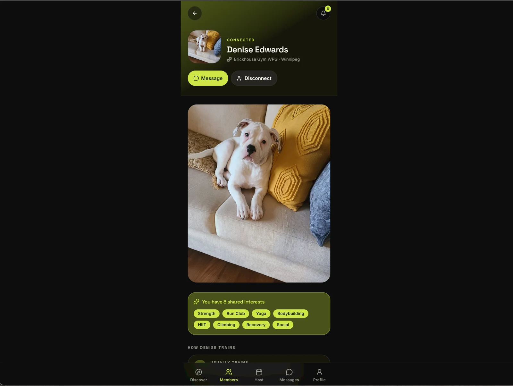
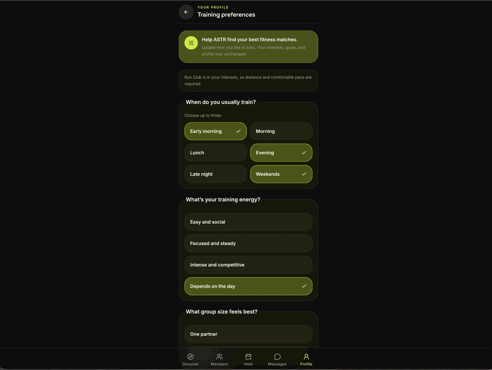

Member identity
Verified gym communities, rich profiles, interests, preferences, discovery, and messaging.
ASTR gives fitness operators the infrastructure to turn real-world relationships into measurable engagement, retention, conversion—and creator-led revenue.


Fitness brands already spend to create awareness and talk about community. But the social gravity inside a gym lives between trainers, members, hosts, and the people beside them.
ASTR gives operators a system to activate those relationships in the real world—and measure what happens next.
For trainers and fitness creators, those same relationships become a monetization engine: convert social-media attention into local ASTR users, paid group experiences, repeat participation, and owned community.
ASTR sits beside the systems gyms already use for membership, access control, and billing. It adds the identity, community, event, and engagement layer those systems were never built to own.
Real ASTR screens from the working MVP.



Verified gym communities, rich profiles, interests, preferences, discovery, and messaging.
Hosted and recurring sessions turn “community” from brand copy into scheduled real-world behaviour.
QR check-in turns attendance into verified first-party behavioral data instead of likes, impressions, or self-reported participation.
Attendees can reconnect after a shared event, extending a workout into an actual member relationship.
Track RSVP, attendance, repeat participation, member activity, and conversion signals from a gym-scoped dashboard.
Designed to plug into the systems large fitness operators already run—not force a rip-and-replace migration.
Every step creates measurable first-party signals: event demand, verified attendance, member connections, repeat participation, conversion—and ultimately retention.
ASTR gives fitness creators a reason to actively bring their audience onto the platform. A trainer can move followers from social content into local paid events, verified attendance, repeat participation, and long-term community instead of monetizing one client at a time.
In this example, the creator earns roughly 3.3× more gross revenue per hour while serving 5× as many people at once. Pricing is illustrative; actual host economics can vary by venue, split, and event.
Audience → ASTR → RSVP → paid event → content → larger audience → more ASTR users → more events.
The incentive is structural: creators gain revenue and leverage, members get lower-cost social fitness experiences, gyms gain traffic and engagement, and ASTR gains organic user acquisition plus first-party behavioral data.
The first wedge is deliberately narrow: recurring creator-led sessions in Winnipeg, social-to-ASTR conversion, verified member onboarding, QR attendance, post-event connections, and an operator dashboard that measures participation, connection, conversion, and repeat behaviour.
Run recurring events. Fill sessions. Verify members. Establish clean RSVP → attendance instrumentation.
Measure repeat attendance, new connections, member activity, conversion signals, and operator feedback.
Use the evidence to onboard additional gym partners and test whether the same playbook transfers across locations.
Gyms already have the ingredients for community: members, trainers, space, programming, and brand demand. ASTR turns those assets into a measurable relationship network operators can activate, track, and improve.
Brand posts
Paid reach
Creator audience stays off-platform
Disconnected events
Member silos
Weak attribution
Verified member identity
Creator-led acquisition + revenue
Recurring community engine
Verified attendance graph
Member-to-member relationships
Participation + conversion telemetry
The $250K CAD pre-seed funds the next proof point: turning a built MVP and single-gym wedge into a repeatable, instrumented pilot that demonstrates member participation, creator-led acquisition economics, operator value, and a path to multi-location scale.
Founder & CEO. Sales and GTM operator with a sports-science background, building ASTR at the intersection of member behavior, community infrastructure, and operator economics.
View founder background ↗ASTR makes those relationships infrastructure.